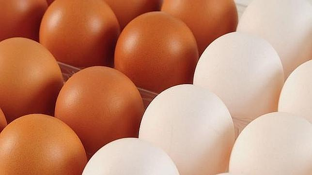
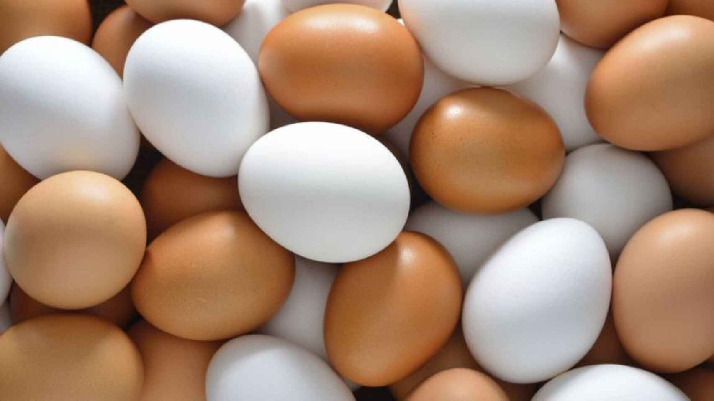

El huevo es rico en proteínas, principalmente albúmina, que es la parte blanca del huevo (clara), y lípidos (yema). Ahondemos un poco más: la clara está formada por 90% de agua y el resto son proteínas; es así que éste es el único alimento que aporta proteínas sin grasa. La yema es la tercera parte del huevo y se compone principalmente de grasas saludables, vitaminas, proteínas y minerales, aportando en conjunto 60 calorías. ¿Diferencia entre huevo blanco y huevo marrón en cuanto a nutrientes? Ninguna.
Productos
Hasta ahora ni el grosor de la cáscara ni el contenido de nutrientes son determinantes en cuanto a qué huevo es “mejor”, por lo que hay que definir entonces a qué se debe la diferencia en el color.
El color de la cáscara obedece única y exclusivamente a factores genéticos. Los pigmentos protoporfirina, biliverdina y quelato de zinc de biliverdina son los responsables de la coloración de la cáscara. En otras palabras, las gallinas de razas con plumaje blanco ponen huevos blancos, mientras que las de razas de plumas de color marrón, pondrán huevos de color marrón. El color de la cáscara no determina si el huevo es más o menos nutritivo, sólo nos indica a los consumidores la raza de gallina de la cual proviene el producto, por lo que, tomando en cuenta las consideraciones que se mencionan arriba, entre otros aspectos, podemos tener la seguridad de adquirir huevo mexicano es signo de nutrición sin importar su color.